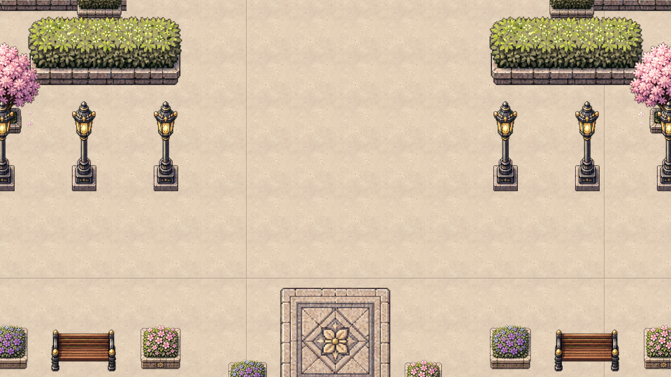
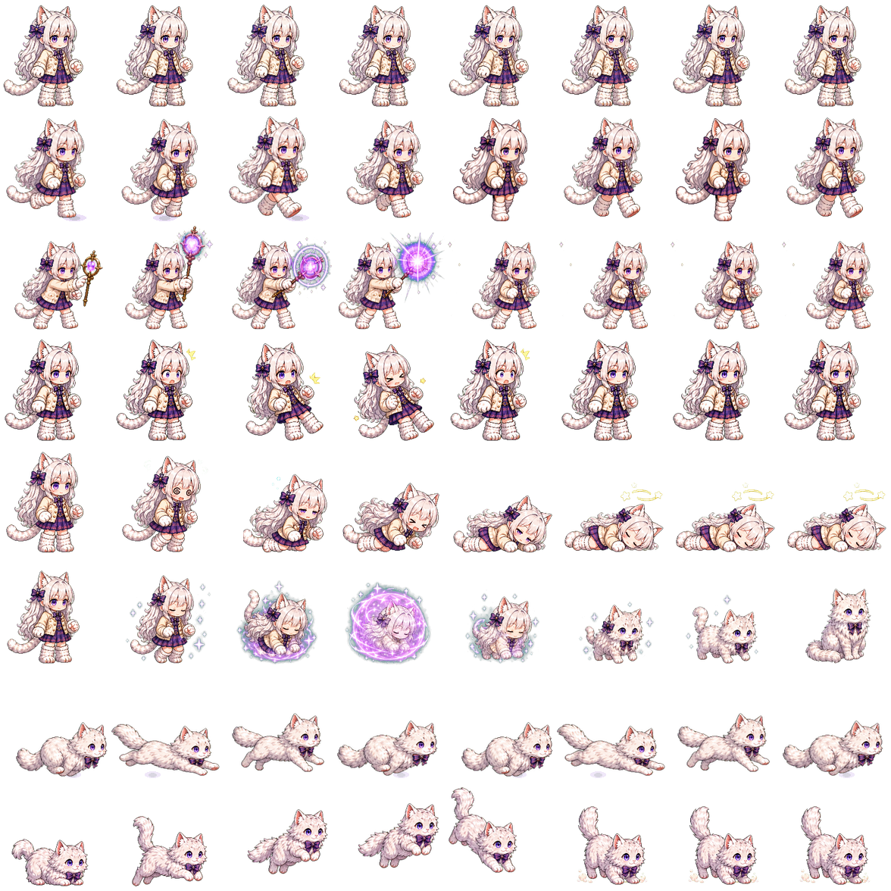
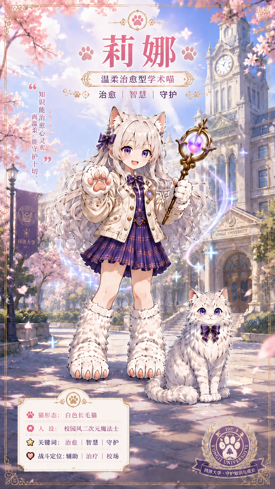
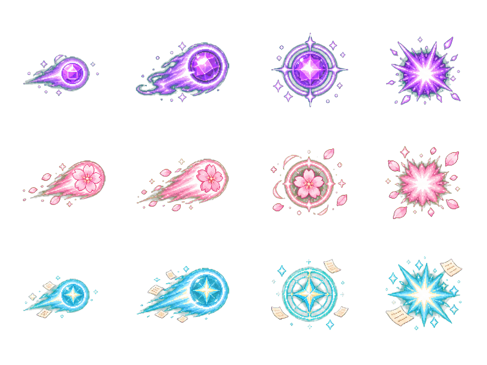
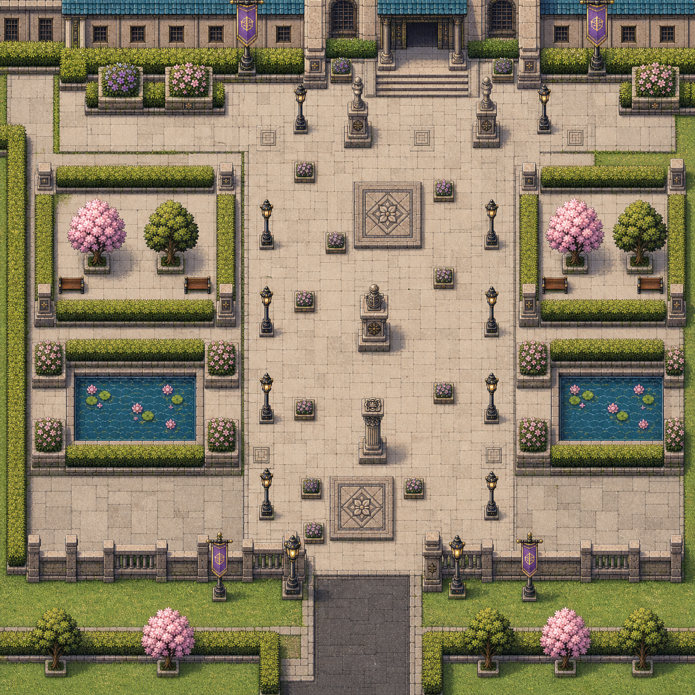
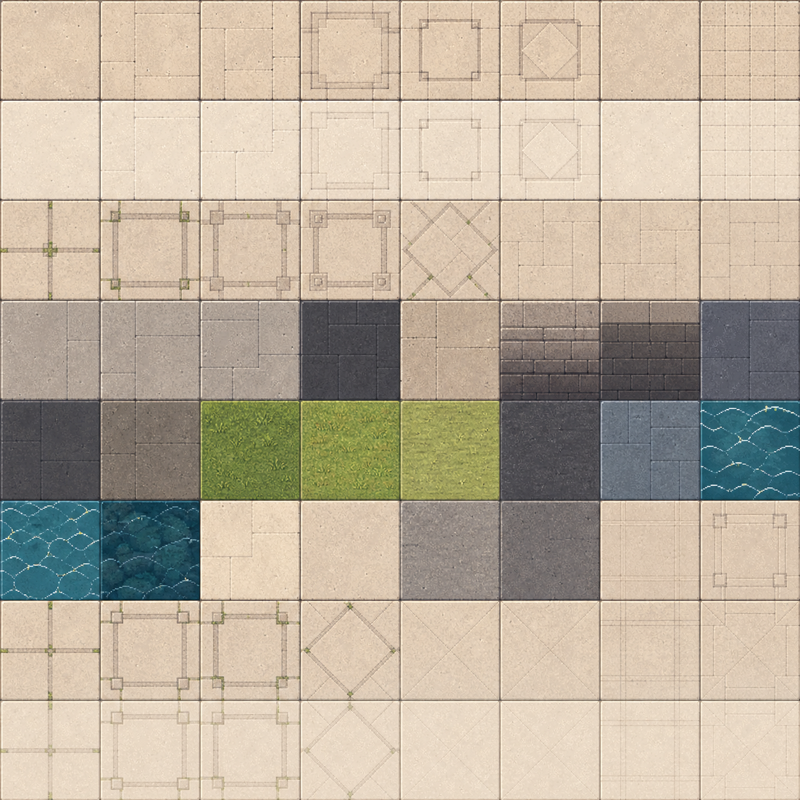
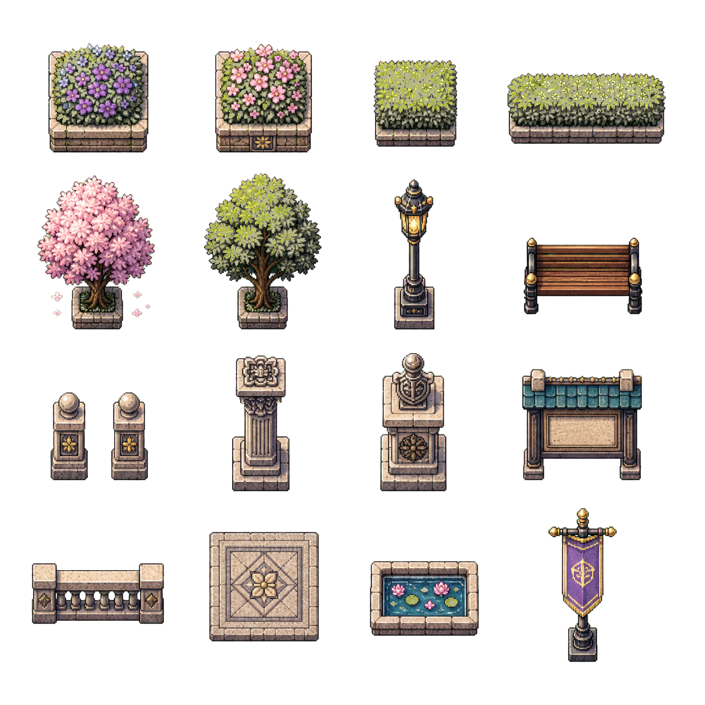
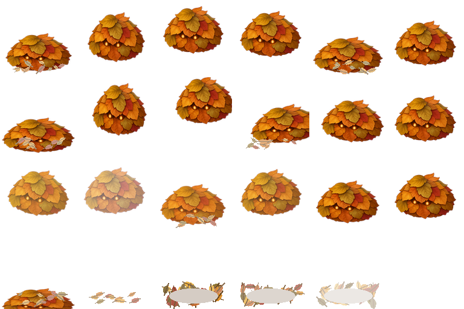

一个来源
每位同学只在自己的学号文件夹里工作。最终合并时可以一眼看出内容来自谁。
Copy First
如果你不知道怎么开始，直接复制下面这段。它会先让 AI 学习项目页面，再验证官方角色 API 能不能在你的本地跑起来，最后再进入个人关卡设计。
https://efv.tju2025mem3.me/llms.txt
https://efv.tju2025mem3.me/contribution_guide.html
https://efv.tju2025mem3.me/gdd_scope_review.html
https://efv.tju2025mem3.me/index.html
是我们小组作业总体项目，你学习一下。然后我想先试一下官方角色能不能拉到我本地开始测试，然后我们再策划我的关卡怎么设计。
我的学号是 2540732。你来组织文件结构，目前先看看官方 API 成不成，让角色在我电脑上能做动作。
如果本地没有 Python，请你帮我安装 3.10/3.11 以及必要的环境；如果网络连接不好，请使用国内镜像。
当能看到官方角色在我本地跑起来时，我们开始讨论我的关卡设计。https://efv.tju2025mem3.me/llms.txt 和本页。临时 HTML 可以用于本地测试，但正式提交时只保留个人 JS、assets、data。
01 Collaboration Model
当前最适合小组协作的方式，不是让每个人都改主程序，而是让每个人提交一个边界清楚的内容包。内容包可以很小：一个怪物、一个 NPC、一个地图角落、一组 props、一个触发事件，或者这些内容的组合。
每位同学只在自己的学号文件夹里工作。最终合并时可以一眼看出内容来自谁。
一个独立 JS、一个 assets/、一个 data/。不要直接覆盖 app.js 或公共素材。
官方主角、动作规格、风格提示和内容注册都从 official-api.js 读取。
所有怪物、NPC、事件、点位、素材 key 都用 s学号_ 前缀，减少合并冲突。
02 Tech Stack
这个项目目前是静态前端游戏测试页。你可以让 AI 写 JS、JSON、Markdown 和素材清单；不要让 AI 引入新框架、改主程序结构或提交临时测试 HTML。
vendor/phaser.min.js。app.js，同学不要直接覆盖。official-api.js。assets/。data/。assets/，但不要覆盖公共文件。local-preview.html 自测。03 Package Contract
请统一放在 contrib/ 下面。文件夹内只保留三类正式交付：一个 JS 入口、一个素材目录、一个数据目录。你可以在本地写 HTML 测试页帮助自己预览，但提交前要删掉 HTML。
只做注册，不改主程序。把自己的内容包挂到 window.EFVContrib.register(...)，以后主程序或测试页就能读取。
精灵图、头像、瓦片、props、怪物图、NPC 图、预览图。路径必须写进 manifest.json，不要只把图丢进去。
触发器、出生点、对话、碰撞建议、传送点、奖励草案、测试记录。能被程序读取的用 JSON，说明类用 Markdown。
triggerspointsdialogue可以临时建 local-preview.html 验证你的 JS 和素材路径。最终交付时不要提交 HTML，避免每个人的页面结构互相冲突。
2025000000-level.js、assets/、data/。如果你让 AI 生成了临时 HTML、临时截图、临时调试脚本，请在 test_report.md 里记录测试结果，但不要把临时文件一起提交。
| 命名对象 | 推荐格式 | 例子 |
|---|---|---|
| 内容包 ID | s学号_英文短名 |
s2025000000_leaf_courtyard |
| 怪物 / NPC / 物件 ID | s学号_类型_名字 |
s2025000000_monster_book_mite |
| 事件 / 触发点 ID | s学号_event_名字 |
s2025000000_event_library_gate |
| 素材文件名 | 英文小写、数字、连字符 | book-mite-sprites-v1.png |
04 Data Schema
所有数据都先用草案级 JSON，不要求一次做成完整系统。关键是把“它是什么、资源在哪里、想出现在什么位置、触发什么事件”讲清楚。
{
"studentId": "2025000000",
"id": "s2025000000_leaf_courtyard",
"title": "叶影庭院小关卡",
"type": "level-pack",
"zone": "zhonghe-plaza",
"entry": "2025000000-level.js",
"assets": {
"monsters": ["assets/enemies/book-mite-sprites-v1.png"],
"npcs": ["assets/npc/archive-senior-portrait-v1.png"],
"props": ["assets/props/notice-board-v1.png"],
"tilesets": []
},
"data": {
"points": "data/points.json",
"triggers": "data/triggers.json",
"dialogue": "data/dialogue.json"
}
}{
"spawnPoints": [
{
"id": "s2025000000_spawn_main",
"x": 4800,
"y": 3600,
"facing": "S",
"note": "玩家进入庭院后的测试点"
}
],
"triggers": [
{
"id": "s2025000000_event_first_note",
"type": "dialogue",
"x": 4920,
"y": 3520,
"radius": 96,
"target": "s2025000000_dialogue_note_01"
}
]
}test_report.md 里写“需要技术组合并时微调坐标”。不要因为坐标不完美就不提交。
05 Official API
official-api.js不要复制莉娜素材路径，也不要自己猜动作行。让 AI 先读取 official-api.js，再用下面这些方法拿主角、武器、风格提示和内容包注册入口。
const lina = window.EFVOfficial.getMainCharacter();
console.log(lina.assets.sprite);
console.log(lina.actions);window.EFVContrib.register({
studentId: "2025000000",
id: "s2025000000_leaf_courtyard",
title: "叶影庭院小关卡",
type: "level-pack",
entry: "2025000000-level.js"
});preload() {
EFVOfficial.preloadPhaserAssets(this);
}
create() {
const lina = EFVOfficial.createLina(this, 480, 320, {
scale: 1,
action: "idle"
});
}如果你的临时测试页放在 contrib/2025000000/local-preview.html，可以这样引用公共库和自己的 JS。提交前删除这个 HTML。
<script src="../../vendor/phaser.min.js"></script>
<script src="../../official-api.js"></script>
<script src="2025000000-level.js"></script>把这句话发给你的 AI：先读取 official-api.js，列出 EFVOfficial 和 EFVContrib 能提供什么，再决定我的关卡包需要调用哪些方法。
请先不要写代码。
请读取 official-api.js，
解释 EFVOfficial 和 EFVContrib 的用途，
然后给我一份适合我学号文件夹的接入步骤。| API | 用途 |
|---|---|
EFVOfficial.getMainCharacter() |
读取莉娜资料、头像、精灵表路径、动作规格。 |
EFVOfficial.getWeapons() |
读取三把官方法杖、攻击精灵表、飞弹帧和冷却参数。 |
EFVOfficial.getStylePrompt() |
给 AI agent 或图像生成工具使用的官方风格提示词。 |
EFVContrib.register(pack) |
同学把自己的内容包注册到统一列表，后续测试页可以读取。 |
official-api.js 是静态前端文件，作用是统一读取主角和注册内容包；它不负责上传、登录、数据库或云存档。
06 Visual Reference
请让 AI 先观察官方角色、精灵表、地图、props 和怪物参考，再生成新素材。目标不是复制某一张图，而是保持同一套“同济校园 + 樱花季 + 学术幻想 + 轻量 JRPG”的视觉语言。








适合大多数同学和普通图像 agent：待机 2-4 帧，移动 2-4 帧，攻击或触发 3-4 帧。先保证稳定、干净、能读懂。
适合主要角色、重要 NPC 或小怪：每个动作 4-6 帧。可以表现更多动作细节，但要避免角色体型和五官每帧漂移。
只有在模型稳定、参考充足、确实需要时再做 8 帧或更多。不要为了追求帧数牺牲一致性。
manifest.json 或素材说明里写清楚：每格尺寸、行列数、动作名称、每个动作使用的帧序号、是否循环、推荐播放速度。
可以直接发给 AI 的参考素材路径
assets/portraits/lina.png：角色头像气质。assets/sprites/lina-sprites-v10-anchored-expanded.png：官方主角精灵表规格。assets/effects/lina-projectiles-atlas-v1.png：法术效果和色彩反馈。assets/maps/playable/previews/zhonghe-plaza-tilemap-playtest-v1-game-view.png：游戏实际视角。assets/maps/playable/previews/zhonghe-plaza-ground-material-atlas-imagegen-v1.png：地图瓦片材质。assets/maps/props/zhonghe-plaza-props-atlas-v1.png：props 形状和摆放风格。assets/enemies/leaf-poring-portrait-v2.png、assets/enemies/leaf-poring-sprites-v2.png：怪物头像和动作参考。同济校园、樱花季、学术幻想、轻量 JRPG、清晰线稿、柔和高明度色彩、透明背景精灵、俯视 2D 瓦片地图、边缘干净、适合切片。
不要使用真实校徽、商业商标、照片质感、厚重暗黑风、文字糊成一团的贴图、难以切片的复杂透视、带水印素材。
07 AI Workflow
如果你不熟悉代码，不要直接让 AI “帮我接入游戏”。先让它读本页、读 official-api.js、解释规则，再让它帮你生成文件清单和内容。这样不容易改坏主项目。
目标是让 AI 先知道技术栈、文件边界、素材风格和官方 API。
read first先确认要做怪物、NPC、props、地图角落还是触发事件，再列文件清单。
plan first最后生成 JS、JSON、Markdown 和素材说明；本地可以用 HTML 预览，但不要提交 HTML。
check before submit你正在为《学术喵的奇幻之旅：樱花同济篇》制作一个同学关卡内容包。
请先读取 contribution_guide.html 和 official-api.js。
我的学号是【2025000000】。
请先不要写代码。
请用简短清单告诉我：
1. 本项目技术栈是什么；
2. 我能提交哪些文件；
3. 哪些文件不能改；
4. 官方 API 能提供什么；
5. 美术风格要参考哪些素材。请帮我规划 contrib/2025000000/ 内容包。
我想做【怪物/NPC/地图角落/props/触发事件】。
正式提交只能包含：
1. 2025000000-level.js
2. assets/
3. data/
请先输出 manifest.json、points.json、triggers.json、素材清单、测试清单。
不要修改 app.js，不要覆盖公共 assets，不要提交 HTML。请根据 EFVOfficial.getStylePrompt() 和下面参考素材，
帮我写一份给图像生成模型使用的素材提示词。
目标风格：同济校园、樱花季、学术幻想、轻量 JRPG。
要求：角色和怪物透明背景；地图素材适合俯视 2D 瓦片；
props 要能独立摆放；每张图都要说明用途和推荐文件名。
怪物、NPC、技能特效不强制 8 帧，请根据稳定性选择 1、2-4、4-6 或 8 帧。
请参考：
assets/portraits/lina.png
assets/sprites/lina-sprites-v10-anchored-expanded.png
assets/maps/props/zhonghe-plaza-props-atlas-v1.png
assets/enemies/leaf-poring-portrait-v2.png
assets/maps/playable/previews/zhonghe-plaza-tilemap-playtest-v1-game-view.png请检查我的 contrib/2025000000/ 内容包是否符合规范。
重点检查：
1. 是否只提交 JS、assets、data；
2. ID 是否全部使用 s2025000000_ 前缀；
3. manifest.json 是否列出所有素材路径；
4. 是否错误修改 app.js 或公共 assets；
5. test_report.md 是否说明本地测试结果。08 Merge Checklist
app.js。assets/ 和 data/ 路径都写进 manifest.json。s学号_ 前缀。manifest.json 和注册后的 EFVContrib 内容包。这样即使某个内容包暂时不合格，也可以只暂停那个包，不影响其他同学和主程序。